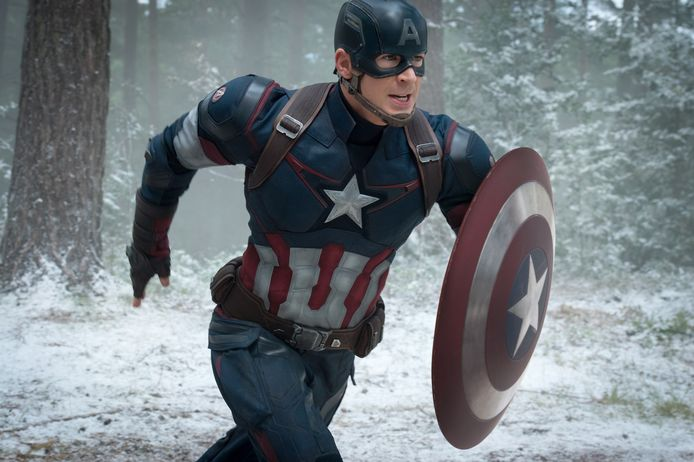
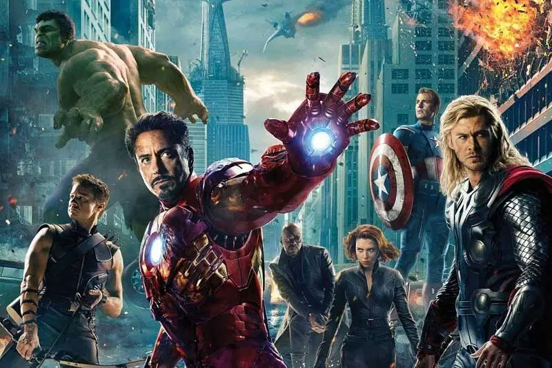

About Captain America
Captain America is the alter ego of Steve Rogers, a frail young man enhanced to the peak of human perfection by an experimental serum to aid the United States government's efforts in World War II. Near the end of the war, he was trapped in ice and survived in suspended animation until he was revived in the present day.
Captain America famous qoutes:
- I don't like bullies; I don't care where they're from.
- On your left.
- I'm just a kid from Brooklyn.
- Language!
- I can do this all day
Captain America's fellow avengers
Iron man
Genius. Billionaire. Philanthropist. Tony Stark's confidence is only matched by his high-flying abilities as the hero called Iron Man.
Black Widow
Natasha Romanoff, separated from the now-fractured Avengers, confronts the dark path she took to becoming a spy and assassin, as well as events that followed.
Hawkeye
A master marksman and longtime friend of Black Widow, Clint Barton serves as the Avengers’ amazing archer.
Hulk
Dr. Bruce Banner lives a life caught between the soft-spoken scientist he’s always been and the uncontrollable green monster powered by his rage.
Thor
The son of Odin uses his mighty abilities as the God of Thunder to protect his home Asgard and planet Earth alike.